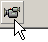
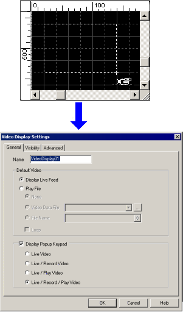

|
|
|
|
|
|
|
|
This section describes steps for drawing a Video Display on a panel.

The Video Display cannot be less than 160 by 120 pixels.
Only two Video Displays can be on a single panel at a time.
Objects placed in front of a Video Display will appear behind it at run time.
Click the Video Display icon in the Graphical Objects toolbar.

On the panel, draw the Video Display and left-click to complete the drawing.
The Video Display Settings dialog box will display.

Configure the Video Display settings as required by your project. See Section 19.1.8.1, General Tab for descriptions of the Video Display setting's tabs.